‘നിറവ് ’ കുടുംംബശ്രീ യൂണിറ്റിൽ സോോപ്പ് ഉണ്ടാക്കുകയാണ്. ഇന്ന് അവധിയായതിനാൽ മാനവ് അമ്മയോോടൊൊപ്പം അവിടെ എത്തി. 68
ഗണിതം 2
സ്റ്റാൻഡേർഡ്

‘നിറവ് ’ കുടുംംബശ്രീ യൂണിറ്റിൽ സോോപ്പ് ഉണ്ടാക്കുകയാണ്. ഇന്ന് അവധിയായതിനാൽ മാനവ് അമ്മയോോടൊൊപ്പം അവിടെ എത്തി. 68
ഗണിതം 2
സ്റ്റാൻഡേർഡ്
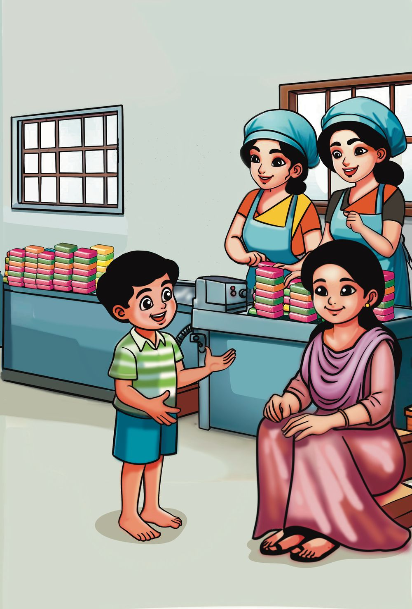


5
5
യൂണിറ്റ്
ഒന്നായ് ചേരാം നന്നായ് വളരാം
ഒന്നായ് ചേരാം നന്നായ് വളരാം
69
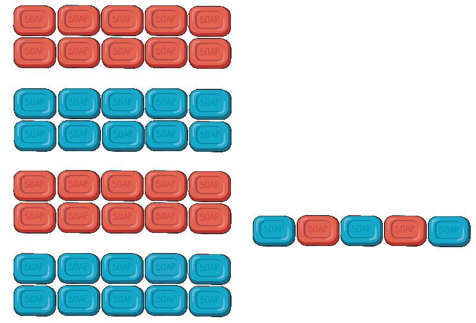

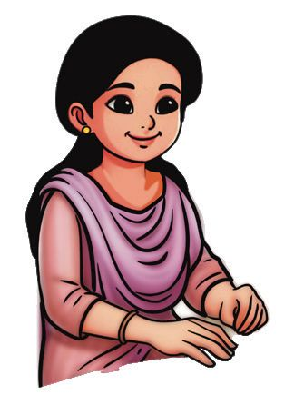


ഓരോോരുത്തരുംം എണ്ണിയ സോോപ്പുകൾ നോോക്കൂ.
പത്തിന്റെ കൂട്ടങ്ങൾ. ഒന്നുകൾ. ആകെ
10 + 3
=
ശാന്ത
പത്തിന്റെ കൂട്ടങ്ങൾ. ഒന്നുകൾ. ലത
70
ഗണിതം 2
സ്റ്റാൻഡേർഡ്
ആകെ
+
=


പത്തിന്റെ കൂട്ടങ്ങൾ. ഒന്നുകൾ. ആകെ
+
നജ്മ
=
പത്തിന്റെ കൂട്ടങ്ങൾ. ഒന്നുകൾ. ആകെ
+
=
റോോസി
പത്തിന്റെ കൂട്ടങ്ങൾ. ഒന്നുകൾ. +
=
നിഷ 5
യൂണിറ്റ്
ആകെ
ഒന്നായ് ചേരാം നന്നായ് വളരാം
71

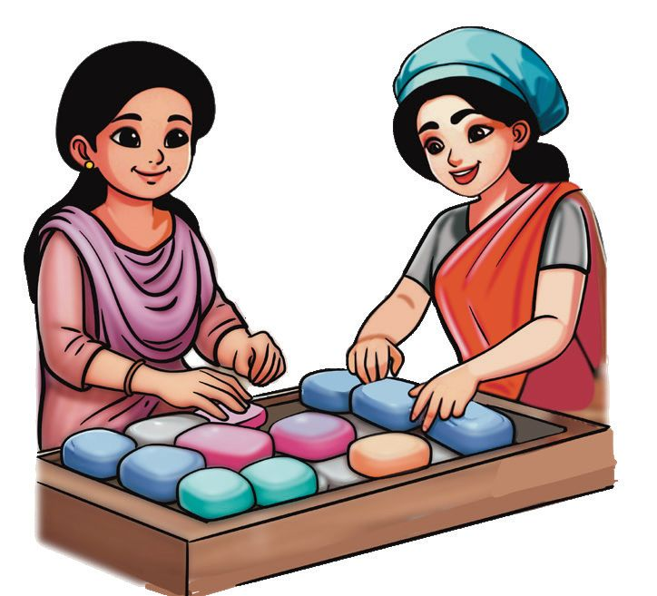
റോോസിയും ശാന്തയും കൂടി എത്ര സോോപ്പുകൾ എണ്ണി വച്ചു? +
റോോസി എണ്ണിയത്.
=
20 + 4 = 24
ശാന്ത എണ്ണിയത്.
10 + 3 = 13
രണ്ടുപേരുംം കൂടി എണ്ണിവച്ചത്.
30 + 7 = 37
24 + 13 = 20 + 10 + 4 + 3 20 ഉം 10 ഉം 30. 4 ഉം 3 ഉം 7. 30 ഉം 7 ഉം 37.
20 + 4 = 24 10 + 3 = 13 30 + 7 = 37
ശാന്തയും നജ്മയും കൂടി എത്ര സോോപ്പുകൾ എണ്ണി? 13 + 50 = 10 + 50 + 3 = ..........................
ലതയും നിഷയും കൂടി ആകെ എത്ര സോോപ്പുകൾ എണ്ണി?
72
ഗണിതം 2
സ്റ്റാൻഡേർഡ്

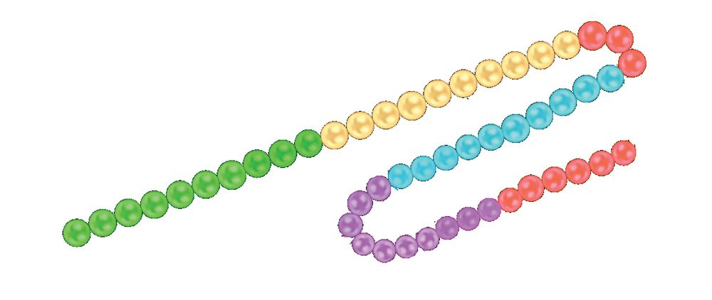

സംഖ്യാമാല 23 + 26
സംഖ്യാമാലയിൽ കാണിച്ചത് നോോക്കൂ. ഉത്തരമെഴുതൂ.
23 26
14 + 25
സംഖ്യാമാലയിൽ മുത്തുകൾ വരച്ചുകാണിക്കൂ.
സംഖ്യാമാലയിൽ എത്ര മുത്തുകൾ ഉണ്ട്?
സംഖ്യയമാലയിലെ സംഖ്യയകൾ ഏതൊൊക്കെയാകാം? സംഖ്യയകൾ
...... + ......
മാനവിന് കിട്ടി യ കാർഡ് നോോക്കൂ.
32 + 13
മാല കോോർക്കാൻ എത്ര മുത്തുകൾ വേണം? മറ്റുചിലർക്ക് കിട്ടി യ കാർഡുകളാണ് ചുവടെയുള്ളത്. 16 + 42
35 + 14
22 + 67
5
യൂണിറ്റ്
ഓരോോരുത്തർക്കും ആകെ എത്ര മുത്തുകൾ വേണമെന്ന് കണക്കാക്കുക. ഒന്നായ് ചേരാം നന്നായ് വളരാം
73
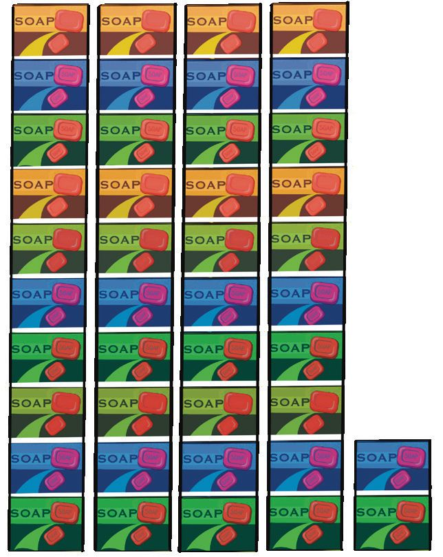


മാനവും അവിനയും സോോപ്പുകൾ അടുക്കിവച്ചത് നോോക്കൂ. അവിന
മാനവ് +
=
ഓരോോരുത്തരുംം എത്ര എണ്ണം അടുക്കിവച്ചു? അവിന - 2 പത്തും 7 ഒന്നും = 27 മാനവ് - 1 പത്തും 5 ഒന്നും = 15 രണ്ടു പേരുംം കൂടി എത്ര സോോപ്പുകൾ അടുക്കിവച്ചു? 27 ന്റെയും 15 ന്റെയും തുക കണക്കാക്കണം. 27 + 15 2 പത്തും + 1 പത്തും + 7 ഒന്നും + 5 ഒന്നും
രണ്ടുപേരുംം കൂടി - 3 പത്തും 12 ഒന്നും. 27 + 15 20 + 10 +7 +5 30 + 12 = 30 + 10 + 2 = 42
74
ഗണിതം 2
സ്റ്റാൻഡേർഡ്
20 + 7 10 + 5 30 + 12
= 27 = 15 = 42
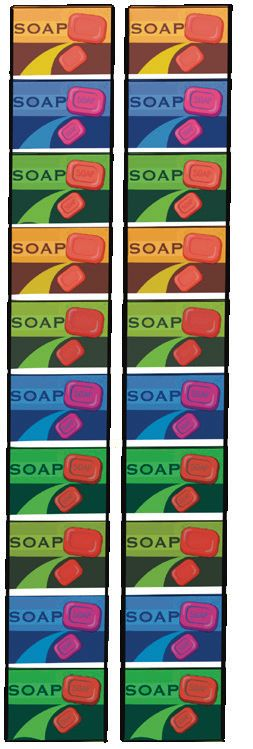


പത്തുകൾ കൂട്ടിയാൽ. 2 പത്ത്
+
1 പത്ത്
+
20
3 പത്ത്
=
=
10
=
30
ഒന്നുകൾ കൂട്ടിയാൽ.
+
7
+
=
5
= 12 ഒന്ന്
+
=
1
2
പത്ത് ഒന്ന്
5
യൂണിറ്റ്
7 + 3 + 2 = 10 + 2 = 12 ഒന്നായ് ചേരാം നന്നായ് വളരാം
75

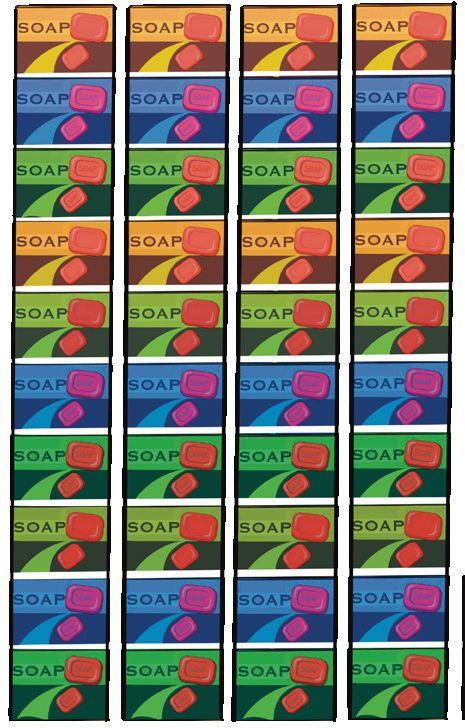


ആകെ സോോപ്പ് 4 പത്ത് + 2 ഒന്ന്
+
4 പത്ത്.
=
2 ഒന്ന്.
42 40 + 2 = 42
എത്ര സോോപ്പ്?
ആകെ എത്ര സോോപ്പ്? കണക്കാക്കി എഴുതൂ.
+
കണക്കാക്കിയത് എങ്ങനെ? 76
ഗണിതം 2
സ്റ്റാൻഡേർഡ്
=
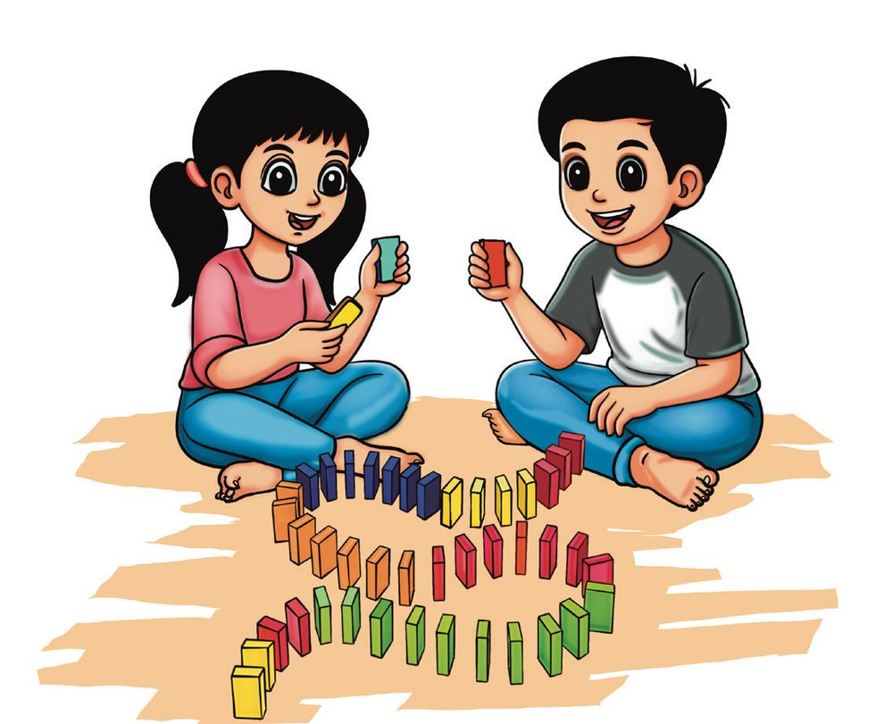
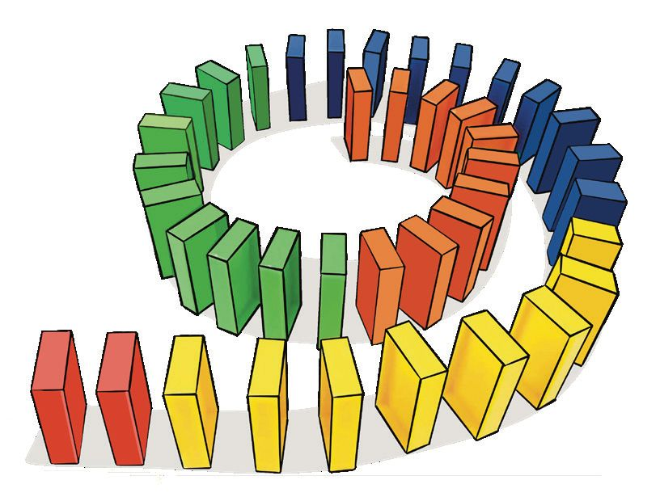


കട്ടകൾകൊൊണ്ട് കളിക്കാം. ഹരിത, അൻഷിദ്, നിത, അജൽ എന്നിവർ കട്ടകൾ കൊൊണ്ട് കളി തുടങ്ങി. ഹരിതയ്ക്കും അൻഷിദിനും കിട്ടിയ കട്ടകളുടെ ചിത്രം നോോക്കൂ.
നമുക്ക് കട്ടകൾവച്ച് കളിക്കാം.
രണ്ടുപേർക്കും കൂടി ആകെ എത്ര കട്ടകളാണ് കിട്ടിയത്?
+
=
അൻഷിദ്
5
യൂണിറ്റ്
ഹരിത
ഒന്നായ് ചേരാം നന്നായ് വളരാം
77

നിതയ്ക്കും അജലിനും കൂടി 68 കട്ടകൾ കിട്ടി . ഏതു ഗ്രൂപ്പാണ് കളിയിൽ ജയിച്ചത്? അവർക്ക് എത്ര കട്ടകൾ കൂടുതൽ കിട്ടി? എങ്ങനെ കണക്കാക്കി? കൂട്ടുകാരോോട് പറയൂ. നിതയ്ക്കും അജലിനും കിട്ടിയ കട്ടകൾ എത്രയൊൊക്കെ ആകാം? നിത അജൽ ഞാൻ കണക്കാക്കിയത്.
ചങ്ങാതി കണക്കാക്കിയത്.
രണ്ടാമത്തെ കളിയിൽ ഒന്നാം ഗ്രൂപ്പിന് 48 കട്ടകൾ കിട്ടി. ഹരിതയ്ക്ക് കിട്ടിയതിനേക്കാൾ 4 എണ്ണം കൂടുതലായിരുന്നു അൻഷിദിന് കിട്ടിയത്. ഹരിതയ്ക്ക് എത്ര കട്ടകൾ കിട്ടി?
അൻഷിദിന് എത്ര കട്ടകൾ കിട്ടി?
എങ്ങനെയാണ് കണക്കാക്കിയത്? ക്ലാസിൽ പറയൂ. എഴുതൂ.
ആകെ കട്ടകളെ പത്തിന്റെയും ഒന്നിന്റെയും കൂട്ടമാക്കി വച്ചാൽ, പത്തിന്റെ എത്ര കൂട്ടം ഉണ്ടാകും? ഒന്നുകൾ എത്ര ഉണ്ടാകും? 78
ഗണിതം 2
സ്റ്റാൻഡേർഡ്

രണ്ടാം ഗ്രൂപ്പിന് ആകെ 27 കട്ടകൾ കിട്ടി. നിതയ്ക്ക് കിട്ടിയതി നേക്കാൾ 5 എണ്ണം കുറവായിരുന്നു അജലിന് കിട്ടിയത്. നിതയ്ക്ക് കിട്ടിയ കട്ടകളുടെ എണ്ണം. അജലിന് കിട്ടിയ കട്ടകളുടെ എണ്ണം. എങ്ങനെ കണക്കാക്കി? നിങ്ങളുടെ ഗ്രൂപ്പിൽ പറയൂ. എഴുതൂ.
സോോപ്പുവാങ്ങാം.
നജ്മയിൽ നിന്ന് 13 സോോപ്പുകൾ മിയ വാങ്ങി. അതിന്റെ ഇരട്ടി എണ്ണം മോോഹിത് വാങ്ങി. നജ്മയ്ക്ക് ആകെ എത്ര സോോപ്പ് ചെലവായി? ചങ്ങാതി കണക്കാക്കിയത്.
5
യൂണിറ്റ്
ഞാൻ കണക്കാക്കിയത്.
ഒന്നായ് ചേരാം നന്നായ് വളരാം
79
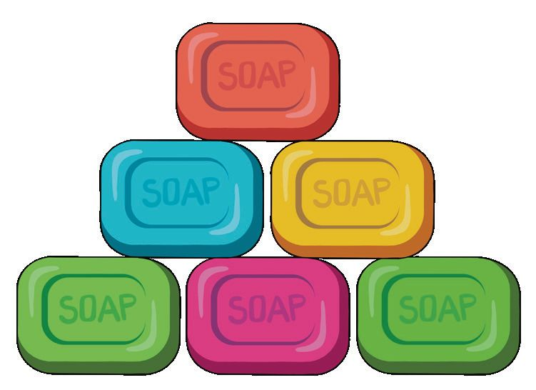


ഇങ്ങനെ സോോപ്പ് അടുക്കി വയ്ക്കണം. 10 സോോപ്പ് അടുക്കിവച്ചാലുള്ള ചിത്രം നോോട്ടുബുക്കിൽ വരയ്ക്കൂ. l
l
ഇതുപോോലെ 7 അട്ടികൾ വച്ചാൽ എത്ര സോോപ്പുകൾ ഉണ്ടാകും? 10 അട്ടി വച്ചാലോോ?
എങ്ങനെ കണക്കാക്കി? ചങ്ങാതിയോോട് പറയൂ.
മനസ്സിൽ കണക്കാക്കാം, പറയാം. നിതയുടെ അമ്മ സോോപ്പുവാങ്ങാൻ 45 രൂപ കൊൊടുത്തു. നിതയുടെ കൈയിൽ 8 രൂപയുണ്ടായിരുന്നു. ആകെ എത്ര രൂപയായി? 8 രൂപ എന്നാൽ 5 രൂപയും 3 രൂപയുമാണല്ലോോ. ഞാൻ 45 രൂപയോോട് 5 രൂപ കൂട്ടി. അപ്പോോൾ 50 രൂപയായി. 50 നോോട് 3 കൂട്ടി 53 രൂപ എന്നു കിട്ടി.
80
ഗണിതം 2
സ്റ്റാൻഡേർഡ്
45 + 8 40 + 5 + 8 40 + 13 40 + 10 + 3 = 50 + 3 = 53
ഞാൻ ഇങ്ങനെയാണ് കണക്കാക്കിയത്.


ഉത്തരം പറയാമോോ? അമ്മ 58 സോോപ്പ് പെട്ടിയിലാക്കി. ഞാൻ 2 എണ്ണം കൂടി ആ പെട്ടിയിൽ വച്ചു. അമ്മ വീണ്ടും 9 എണ്ണം വച്ചു. ഇപ്പോോൾ പെട്ടിയിൽ ആകെ എത്ര സോോപ്പുകളുണ്ട്?
12 രൂപയോോട്
3 രൂപ ചേർന്നപ്പോോൾ 15 രൂപയായി. 12 രൂപയോോട് 8 രൂപ ചേർന്നാൽ എത്രയാകും?
മനസ്സിൽ കണക്കാക്കിയ രീതി 28 + 36 മനസ്സിൽത്തന്നെ കണക്കാക്കിയത് എങ്ങനെയാണ്?
അടയാളമിടുക.
20 + 30=50 | 8 + 6 = 14 | 50 + 14 = 64 28 + 2 = 30 | 30 + 34 = 64 36 + 4 = 40 | 40 + 24 = 64 28 + 30 = 58 | 58 + 6 = 64 20 + 30 + 8 + 6 = 50 + 14 = 64
5
യൂണിറ്റ്
നിങ്ങൾ കണക്കാക്കിയ രീതി എഴുതൂ.
ഒന്നായ് ചേരാം നന്നായ് വളരാം
81

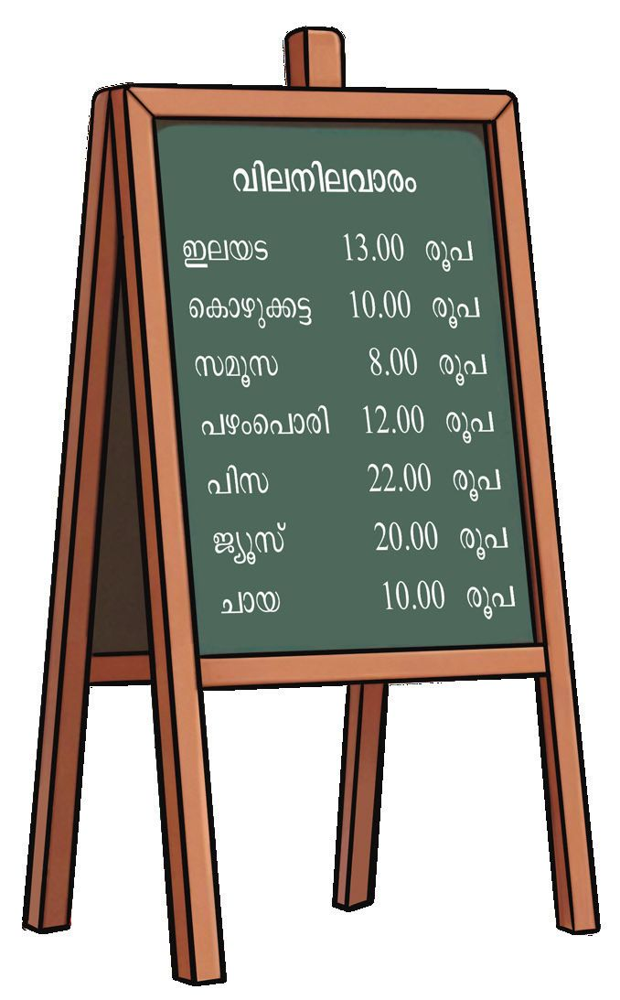
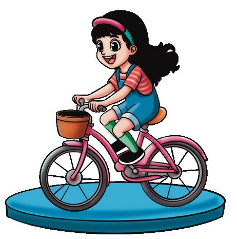


പാർക്കിലെത്തിയ മാനവും അവിനയും ചായക്കടയിലെ ബോോർഡുകണ്ടു. അവിന പറഞ്ഞു. ‘എന്റെ കൈയിൽ 40 രൂപയുണ്ട് ’. അതിന് എന്തൊൊക്കെ വാങ്ങാൻ പറ്റുംം? എനിക്ക് ജ്യൂസും ചായയും കൊൊഴുക്കട്ടയും കിട്ടുംം.
40 രൂപയ്ക്ക്
................... .....................
കിട്ടുംം.
പലതരം കളികളുംം അവിടെ ഉണ്ടായിരുന്നു. ഊഞ്ഞാലാട്ടം സൈക്കിൾ ഓട്ടം 25
17
കാറോോട്ടം 28
അവിന ഊഞ്ഞാലാട്ടം കഴിഞ്ഞ് കാറോോട്ടത്തിനും പോോയി. രണ്ടിനും കൂടി എത്ര രൂപ വേണ്ടിവരുംം? എങ്ങനെ കണക്കാക്കി? 82
ഗണിതം 2
സ്റ്റാൻഡേർഡ്


കളി ബോോർഡിൽ എഴുതിയ സംഖ്യയകൾ ഇങ്ങനെയാണ്. ഒഴിഞ്ഞ കളങ്ങൾ പൂർത്തിയാക്കൂ. നിറം കൊൊടുത്ത +3 +5 +8 +9 കളത്തിൽ 10 30
40 + 8 = 48
13
വരുംം.
35
40 50
58
70 80 90
5
യൂണിറ്റ്
സ്കൂൾ സ്റ്റോോറിൽ നിന്നും അവിനയും മാനവും പുസ്തകങ്ങൾ വാങ്ങി. അവിന വാങ്ങിയ പുസ്തകങ്ങൾക്ക് 24 രൂപയും 23 രൂപയുമായിരുന്നു വില. മാനവ് വാങ്ങിയത് 32 രൂപയുടെ യും 16 രൂപയുടേയും പുസ്തകങ്ങളാണ്. ആരാണ് കൂടുതൽ രൂപ കൊൊടുത്തത്? എത്ര രൂപ കൂടുതൽ? ഒന്നായ് ചേരാം നന്നായ് വളരാം
83

ബലൂണുകൾക്ക് നിറം കൊൊടുക്കൂ. ഒരേ തുകയുള്ള ബലൂണുകൾക്ക് ഒരേ നിറം കൊൊടുക്കുക. 28 + 17 22 + 48
46 + 46
35 + 35
30 + 15 80 + 12
39 + 53
19 + 26
84
ഗണിതം 2
സ്റ്റാൻഡേർഡ്
53 + 17

ചതുരക്കണക്കുകൾ
ഓരോോന്നിന്റെയും തുക അതത് കളത്തിൽ എഴുതൂ. 22 കൂട്ടുക 8 കൂട്ടുക 46
38
18 കൂട്ടുക
12 കൂട്ടുക
18 കൂട്ടുക 75
15 കൂട്ടുക
25 കൂട്ടുക
23 കൂട്ടുക
ഒരേ നിറമുള്ള കളത്തിലെ സംഖ്യയകൾ കൂട്ടി നടുക്കുള്ള കളത്തിലെഴുതുക. 45 39
44 29
23
26
56 38
5
യൂണിറ്റ്
മുകളിലത്തേതുപോോലെ മറ്റു രണ്ടക്ക സംഖ്യയകൾ കളങ്ങളിലെഴുതുക. ആ സംഖ്യയകൾ കൂട്ടി നടുക്കുള്ള കളത്തിലെഴുതുക.
ഒന്നായ് ചേരാം നന്നായ് വളരാം
85

വരക്കണക്കുകൾ 32
47 30
12
24 64
34
10 20
18 81
24
ചേർത്തു വരച്ചിരിക്കുന്നവ കൂട്ടി നോോക്കൂ. 32 + 34 =
കിട്ടിയ സംഖ്യയകൾ ഇവിടെ എഴുതുക. സംഖ്യയകൾക്ക് എന്തെങ്കിലും പ്രത്യേേകത ഉണ്ടോോ? പറയൂ. എഴുതൂ.
ഇതുപോോലുള്ള മറ്റു രണ്ടക്കസംഖ്യയകൾ ഏതൊൊക്കെയാണ്? അക്കങ്ങൾ ആവർത്തിക്കുന്ന എത്ര രണ്ടക്ക സംഖ്യയകൾ ഉണ്ട്?
86
ഗണിതം 2
സ്റ്റാൻഡേർഡ്
ഭാരതത്തിന്റെ ഭരണഘടന ഭാഗം IV ക
മൗലിക കർത്തവ്യയങ്ങൾ 51 ക. മൗലിക കർത്തവ്യയങ്ങൾ - താഴെപ്പറയുന്നവ ഭാരതത്തിലെ ഓരോോ പൗൗരന്റെയും കർത്തവ്യം ആയിരിക്കുന്നതാണ് : (ക) ഭരണഘടനയെ അനുസരിക്കുകയും അതിന്റെ ആദർശങ്ങളെയും സ്ഥാപനങ്ങ ളെയും ദേശീയപതാകയെയും ദേശീയഗാനത്തെയും ആദരിക്കുകയും ചെയ്യുക; (ഖ) സ്വാതന്ത്ര്യയത്തിനുവേണ്ടിയുള്ള നമ്മുടെ ദേശീയസമരത്തിന് പ്രചോോദനം നൽകിയ മഹനീയാദർശങ്ങളെ പരിപോോഷിപ്പിക്കുകയും പിൻതുടരുകയും ചെയ്യുക; (ഗ)
ഭാരതത്തിന്റെ പരമാധികാരവും ഐക്യയവും അഖണ്ഡതയും നിലനിർത്തുകയും സംരക്ഷിക്കുകയും ചെയ്യുക;
(ഘ) രാജ്യയത്തെ കാത്തുസൂക്ഷിക്കുകയും ദേശീയസേവനം അനുഷ്ഠിക്കുവാൻ ആവശ്യയ പ്പെടുമ്പോോൾ അനുഷ്ഠിക്കുകയും ചെയ്യുക; (ങ) മതപരവും ഭാഷാപരവും പ്രാദേശികവും വിഭാഗീയവുമായ വൈവിധ്യയങ്ങൾക്കതീ തമായി ഭാരതത്തിലെ എല്ലാ ജനങ്ങൾക്കുമിടയിൽ, സൗൗഹാർദവും പൊൊതുവായ സാഹോോദര്യയമനോോഭാവവും പുലർത്തുക. സ്ത്രീകളുടെ അന്തസ്സിന് കുറവു വരുത്തുന്ന ആചാരങ്ങൾ പരിത്യയജിക്കുക; (ച) നമ്മുടെ സമ്മിശ്രസംസ്കാരത്തിന്റെ സമ്പന്നമായ പാരമ്പര്യയത്തെ വിലമതിക്കുകയും നിലനിറുത്തുകയും ചെയ്യുക; (ഛ) വനങ്ങളുംം തടാകങ്ങളുംം നദികളുംം വന്യയജീവികളുംം ഉൾപ്പെടുന്ന പ്രകൃത്യാ ഉള്ള പരിസ്ഥിതി സംരക്ഷിക്കുകയും അഭിവൃദ്ധിപ്പെടുത്തുകയും ജീവികളോോട് കാരുണ്യം കാണിക്കുകയും ചെയ്യുക; (ജ)
ശാസ്ത്രീയമായ കാഴ്ചപ്പാടുംം മാനവികതയും, അന്വേേഷണത്തിനും പരിഷ്കരണ ത്തിനും ഉള്ള മനോോഭാവവും വികസിപ്പിക്കുക;
(ഝ) പൊൊതുസ്വവത്ത് പരിരക്ഷിക്കുകയും ശപഥം ചെയ്ത് അക്രമം ഉപേക്ഷിക്കുകയും ചെയ്യുക; (ഞ) രാഷ്ട്രം യത്നത്തിന്റെയും ലക്ഷ്യയപ്രാപ്തിയുടെയും ഉന്നതതലങ്ങളിലേക്ക് നിരന്തരം ഉയരത്തക്കവണ്ണം വ്യയക്തിപരവും കൂട്ടായതുമായ പ്രവർത്തനത്തിന്റെ എല്ലാ മണ്ഡലങ്ങളിലും ഉൽക്കൃഷ്ടതയ്ക്കുവേണ്ടി അധ്വാനിക്കുക; (ട)
ആറിനും പതിനാലിനും ഇടയ്ക്ക് പ്രായമുള്ള തന്റെ കുട്ടിക്കോോ തന്റെ സംരക്ഷണ യിലുള്ള കുട്ടികൾക്കോോ, അതതു സംഗതി പോോലെ, മാതാപിതാക്കളോോ രക്ഷാകർ ത്താവോോ വിദ്യാാഭ്യാാസത്തിനുള്ള അവസരങ്ങൾ ഏർപ്പെടുത്തുക.

കുട്ടി കളുടെ അവകാശങ്ങൾ പ്രിയമുള്ള കുട്ടികളേ, നിങ്ങൾക്കുള്ള അവകാശങ്ങളെന്തെല്ലാമെന്ന് അറിയേണ്ടതില്ലേ? അവകാശങ്ങളെക്കു റിച്ചുള്ള അറിവ് നിങ്ങളുടെ പങ്കാളിത്തം, സംരക്ഷണം, സാമൂഹികനീതി എന്നിവ ഉറപ്പാക്കാൻ പ്രേരണയും പ്രചോോദനവും നൽകും. നിങ്ങളുടെ അവകാശങ്ങൾ സംരക്ഷിക്കാൻ ഇപ്പോോൾ ഒരു കമ്മീഷൻ പ്രവർത്തിക്കുന്നുണ്ട്. കേരള സംസ്ഥാന ബാലാവകാശസംരക്ഷണ കമ്മീഷൻ എന്നാണ് അതിന്റെ പേര്. എന്തെല്ലാമാണ് നിങ്ങൾക്കുള്ള അവകാശങ്ങൾ എന്നു നോോക്കാം.
സംസാരത്തിനും ആശയപ്രകടനത്തിനു മുള്ള സ്വാതന്ത്ര്യം
ജീവന്റെയും
വ്യയക്തിസ്വാതന്ത്ര്യയത്തി ന്റെയും സംരക്ഷണം
അതിജീവനത്തിനും പൂർണ്ണവികാസത്തി നുമുള്ള അവകാശം
സൗൗജന്യയവും നിർബന്ധിതവുമായ വിദ്യാാ
ഭ്യാാസ അവകാശം
കളിക്കാനും പഠിക്കാനുമുള്ള അവകാശം സ്നേഹവും
സുരക്ഷയും നൽകുന്ന കുടുംംബവും സമൂഹവും ലഭ്യയമാകാനുള്ള അവകാശം
ജാതി-മത-വർഗ-വർണ്ണ ചിന്തകൾക്കതീത
മായി ബഹുമാനിക്കപ്പെടാനും അംഗീകരി ക്കപ്പെടാനുമുള്ള അവകാശം
മാനസികവും ശാരീരികവും ലൈംഗി കവുമായ പീഡനങ്ങളിൽ നിന്നുള്ള സംര ക്ഷണത്തിനും പരിചരണത്തിനുമുള്ള അവകാശം
പങ്കാളിത്തത്തിനുള്ള അവകാശം
ബാലവേലയിൽനിന്നും ആപൽക്കര മായ ജോോലികളിൽനിന്നുമുള്ള മോോചനം
ശൈശവവിവാഹത്തിൽനിന്നുള്ള
ക്ഷണം
സ്വവന്തം
സംര
സംസ്കാരം അറിയുന്നതിനും അതനുസരിച്ച് ജീവിക്കുന്നതിനുമുള്ള സ്വാതന്ത്ര്യം
അവഗണനകളിൽനിന്നുള്ള സംരക്ഷണം
നിങ്ങളുടെ ചില ഉത്തരവാദിത്വവങ്ങൾ സ്കൂൾ, പൊൊതുസംവിധാനങ്ങൾ എന്നിവ നശിപ്പിക്കാതെ സംരക്ഷിക്കുക. സ്കൂളിലും പഠനപ്രവർത്തനങ്ങളിലും കൃത്യയ നിഷ്ഠ പാലിക്കുക. സ്കൂൾ അധികാരികളെയും അധ്യാാപ കരെയും മാതാപിതാക്കളെയും സഹപാഠി കളെയും ബഹുമാനിക്കുകയും അംഗീകരി ക്കുകയും ചെയ്യുക. ജാതി-മത-വർഗ-വർണ്ണ ചിന്തകൾക്കതീ തമായി മറ്റുള്ളവരെ ബഹുമാനിക്കാനും അംഗീകരിക്കാനും സന്നദ്ധരാവുക.
ബന്ധപ്പെടേണ്ട വിലാസം:
കേരള സംസ്ഥാന ബാലാവകാശസംരക്ഷണ കമ്മീഷൻ
ശ്രീ ഗണേഷ്, റ്റി.സി. 14/2036, വാൻറോോസ് ജംങ്ഷൻ, കേരള യൂണിവേഴ്സിറ്റി പി.ഒ, തിരുവനന്തപുരം – 34 ഫോോൺ 0471 – 2326603 ഇ- മെയിൽ childrights.cpcr@kerala.gov.in, rte.cpcr@kerala.gov.in വെബ്സൈറ്റ് : www.kescpcr.kerala.gov.in ചൈൽഡ് ഹെൽപ്പ് ലൈൻ - 1098, ക്രൈംം സ്റ്റോോപ്പർ - 1090, നിർഭയ – 1800 425 1400 കേരള പൊൊലീസ് ഹെൽപ്പ് ലൈൻ - 0471 – 3243000/44000/45000 online R.T.E Monitoring : www.nireekshana.org.in